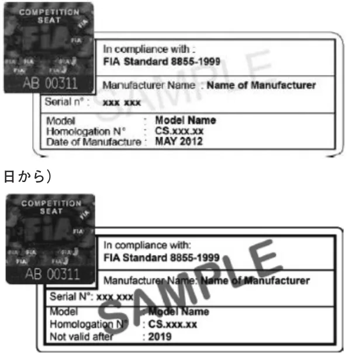
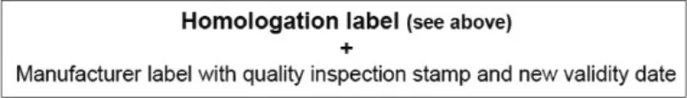
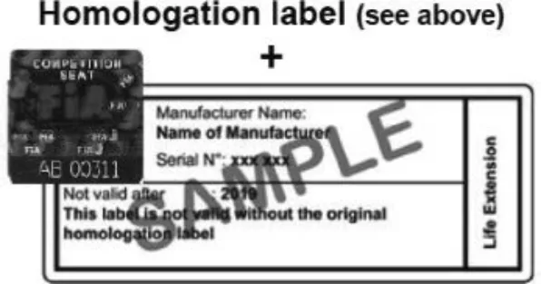
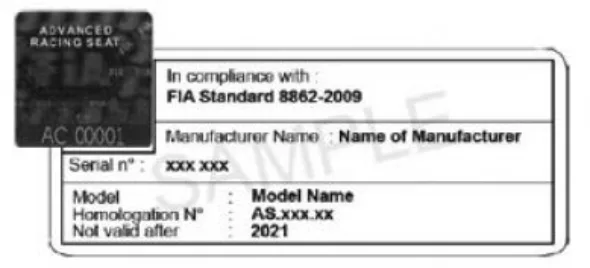
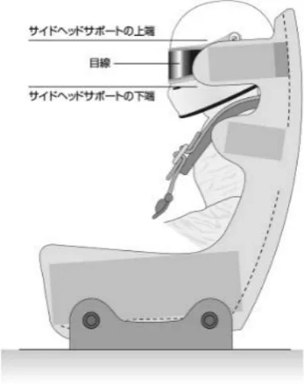

FIA公認の競技用シート_2027
JAF の公式サイトではありません。JAF が公開する PDF を自動変換した非公式の検索用アーカイブです。記載内容は必ず JAF の原本 PDF で出典をご確認ください。 検索と AI 質問つきのビューアで開く
P.1ＦＩＡ公認の競技用シート
１．ＦＩＡ基準8855-1999に従い公認された競技用シート
１）ラベル
上記基準に従い公認された競技用シートには、下記のラベルが貼付されている。公認の証明であるので取り外さないこと。
ラベルはＦＩＡにより管理され、ＦＩＡのオフィシャルまたはＡＳＮのオフィシャルにラベルを削除または除去する権利が与えられている。これは車両の事故によりシートの性能が将来危険な状態になるとの競技会技術委員長の見解によって実施される。図１：ラベル例（2012年１月１日から2013年12月31日）

図２：新ラベル例（2014年１月１日から）
図３：ラベル例（シート再公認 2017年７月１日以前）


２）シートの使用期限
ＦＩＡ公認シートの使用期限は、シートのラベルに示される製造年月から５年とする。
再び有効とするために製造者へ戻され検査を受けたシートは更に２年間の延長が認められる。延長は、シートに有効期間の満了日を明記した追加のラベルを貼付することによって表示され、製造者の品質検査の証印によって有効とされる。また、ラベルに表示されている有効期限を越えて使用してはならない。
３）シートは、シート製造者のインストラクションおよびテクニカルリストNo.12に従って使用されなければならない。
P.2参考：ＦＩＡ基準8855-1999に従ってＦＩＡに公認された日本製競技用シートの一覧（2025年10月現在）
| FIA公認番号 | 製品名 | 製造者名 | 取付け支持具の位置 |
|---|---|---|---|
| CS.024.01 | Mooncraft S/No.2 | ムーンクラフト㈱ | シートの側面 |
| CS.071.03 | DCM CS01 | ㈱童夢カーボンマジック | シートの側面 |
| CS.073.03 | BRIDE F38A | ティーズ㈱ | 〃 |
| CS.085.04 | GT COMPETITION Ⅱ | ムーンクラフト㈱ | 〃 |
| CS.092.04 | BRIDE F31A | ティーズ㈱ | 〃 |
| CS.105.04 | BRIDE F77A | 〃 | 〃 |
| CS.115.04 | BRIDE FZ380 | 〃 | 〃 |
| CS.116.04 | BRIDE FZ310 | 〃 | 〃 |
| CS.134.05 | GT COMPETITION Ⅲ | ムーンクラフト㈱ | 〃 |
| CS.160.06 | GT PRO | ニッサン・モータースポーツ・インターナショナル㈱ | 〃 |
| CS.165.06 | JURAN GTR500 | ㈱タニダ | 〃 |
| CS.173.06 | JURAN GTX100 | 〃 | 〃 |
| CS.174.06 | JURAN GTR500C | ㈱タニダ | 〃 |
| CS.175.06 | JURAN GTX600 | 〃 | 〃 |
| CS.176.06 | JURAN GTX600C | 〃 | 〃 |
| CS.220.08 | GT COMPETITION Ⅴ | ムーンクラフト㈱ | 〃 |
| CS.228.09 | GT PRO Ⅱ | ニッサン・モータースポーツ・インターナショナル㈱ | 〃 |
| CS.235.10 | GT COMPETITION Ⅴ＋ | ムーンクラフト㈱ | 〃 |
| CS.242.10 | TB RACING MSH001 | トヨタ紡織㈱ | 〃 |
| CS.248.11 | GT PRO Ⅲ | ニッサン・モータースポーツ・インターナショナル㈱ | 〃 |
| CS.251.11 | FZ670 | ブリッド㈱ | 〃 |
| CS.252.11 | FZ910 | 〃 | 〃 |
| CS.255.11 | FZ210 | 〃 | 〃 |
| CS.256.11 | FZ420 | 〃 | 〃 |
| CS.259.11 | FZ410 | 〃 | 〃 |
| CS.260.11 | FZ770 | 〃 | 〃 |
| CS.288.13 | FZ390 | 〃 | 〃 |
| CS.289.13 | F39A | 〃 | 〃 |
| CS.291.13 | TB RACING MSH002 | トヨタ紡織㈱ | 〃 |
| CS.321.15 | GT COMPETITION-Ⅵ | ムーンクラフト㈱ | シートの側面 |
| CS.333.15 | H31A | ブリッド㈱ | 〃 |
| CS.337.16 | HZ310 | 〃 | 〃 |
| CS.395.18 | JURAN GTX100α | ㈱タニダ | 〃 |
| CS.396.18 | JURAN GTX600α | 〃 | 〃 |
| CS.404.18 | FZ670 | ブリッド㈱ | 〃 |
| CS.405.18 | FZ910 | 〃 | 〃 |
| CS.412.19 | H01A | 〃 | 〃 |
| CS.413.19 | H02A | 〃 | 〃 |
| CS.414.19 | HZ010 | 〃 | 〃 |
| CS.415.19 | HZ020 | 〃 | 〃 |
| CS.427.19 | HZ030 | 〃 | 〃 |
| CS.428.19 | H03A | 〃 | 〃 |
| CS.443.20 | BRIDE HBZ10 | 〃 | 〃 |
| CS.444.20 | BRIDE HB1A | 〃 | 〃 |
| FIA公認番号 | 製品名 | 製造者名 | 取付け支持具の位置 |
| CS.445.20 | BRIDE HCZ10 | 〃 | 〃 |
| CS.446.20 | BRIDE HBZ20 | 〃 | 〃 |
| CS.447.20 | BRIDE HB2A | 〃 | 〃 |
| CS.448.20 | BRIDE HC1A | 〃 | 〃 |
| CS.449.20 | BRIDE HA1A | 〃 | 〃 |
| CS.450.20 | BRIDE HAZ10 | 〃 | 〃 |
２．ＦＩＡ基準8862-2009／8862-2021に従い公認された競技用シート
１）ラベル
上記基準に従い公認された競技用シートには、下記のラベルが貼付されている。公認の証明であるので取り外さないこと。
ラベルはＦＩＡにより管理され、ＦＩＡのオフィシャルまたはＡＳＮのオフィシャルにラベルを削除または除去する権利が与えられている。これは車両の事故によりシートの性能が将来危険な状態になるとの競技会技術委員長の見解によって実施される。ラベルに表示されている有効期限を越えて使用してはならない。

２）製造者からの情報
ドライバーは身体に合ったシートを選ぶべきである。通常のレーシングポジションで着座した時に、シートは、以下の通り骨盤、肩、頭部を楽に支えるものであること。
・目線の位置は、サイドヘッドサポートの上端よりも下、かつサイドヘッドサポートの下端より上にあること。
・肩はシートのサイドショルダーサポートの内側に収まること。
・骨盤はサイドペルビスサポートによって適切に支持されること。
図５に示されるイメージが含まれるものとする。

３）シートの使用期限
ＦＩＡ公認シートの最大耐用期間は製造年から10年とする。例えば、2012年１月１日に製造されたシートは『2023
P.4年以降無効』である。同様に、2012年12月31日に製造されたシートは『2023年以降無効』である。
耐用期間に関わらず、重大な事故に遭遇したシートは即座にその使用を止めること。
４）シートは、シート製造者のインストラクションおよびテクニカルリストNo.40に従って使用されなければならない。
参考：ＦＩＡ基準8862-2009に従ってＦＩＡに公認された日本製競技用シートの一覧（2026年８月現在）
| FIA公認番号 | 製品名 | 製造者名 | 備考 |
|---|---|---|---|
| AS.019.11 | DH11 | （株）童夢 | |
| AS.024.12 | DH11W | 〃 | |
| AS.048.16 | DOME RS16 | 〃 | （for circuit events only） |
| AS.053.16 | DOME RS16R | 〃 |
参考：ＦＩＡ基準8862-2021に従ってＦＩＡに公認された日本製競技用シートの一覧（2026年８月現在）
| FIA公認番号 | 製品名 | 製造者名 | 備考 |
| CS.030.25 | H11A | BRIDE |